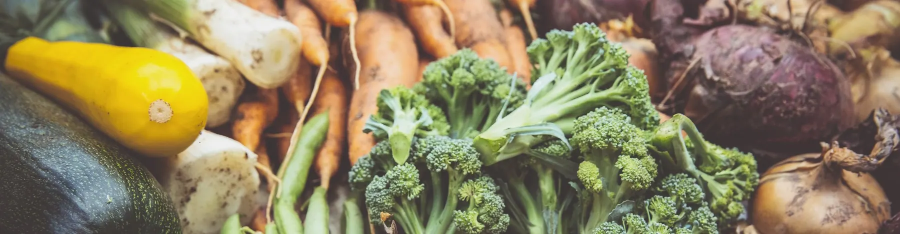

Vegetarisk skollunch
Vid varje skollunch får eleverna omsorgsfull, vällagad vegetarisk mat. Maten är vegetarisk och till stor del ekologisk och KRAV-märkt. Till maten serveras en gedigen salladsbuffé. Det är Skolfood som lagar maten på skolan.
De yngre eleverna äter skollunchen i klassrummet. Årskurs 5 till 9 äter i matsalen, där lärarna från mellan- och högstadiet hjälper till att servera och skapa trivsel kring måltiden.
Kontakta din lärare eller kansliet för att anmäla specialkost
Veckans matsedel
| Måndag | linscurry serveras med ris |
|---|---|
| Tisdag | morotsås med pasta |
| Onsdag | Falafel serveras med varm salsa och ris |
| Torsdag | broccolisoppa med mjuk smörgås och ost |
| Fredag | kikärtsbiff serveras med rostad potatis och pepparsås |